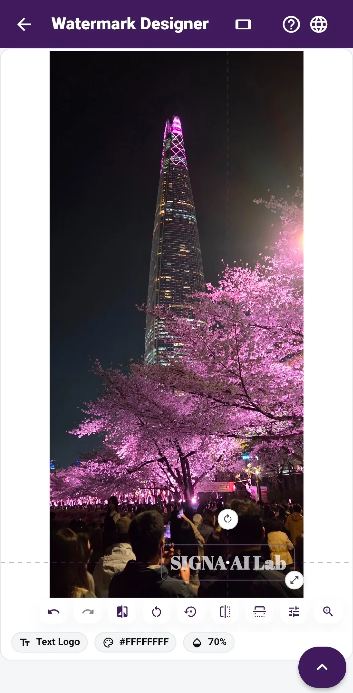

01 · WATERMARK · Free watermarking, no usage cap
Watermark up to 12 photos at once
Put your name or logo on up to 12 photos in one go, as often as you like for free. Adjust the watermark’s size and position on individual shots, then save your design for next time. Work in portrait or landscape, choose the font, color, and opacity, and add an invisible SIGNA signal alongside the visible watermark if you like.
Portrait and landscape · Up to 12 photos · Placement per photo · Saved designs · Extra fonts with Pro
See what a 12-photo batch looks like →Choose a watermark for your photo →